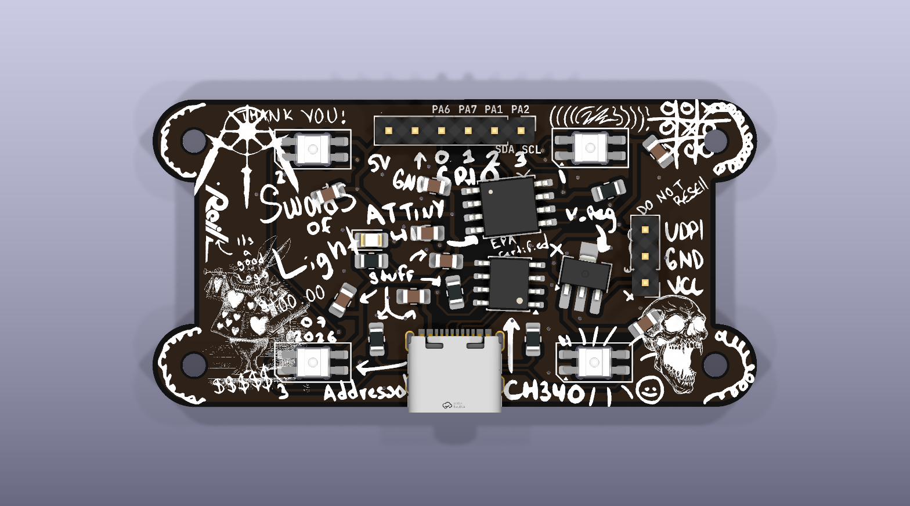

Four addressable RGB LEDs, onboard USB-C power, and built-in SerialUPDI programming. This card gets the example running; the full guide and code live on GitHub.

In Arduino IDE, open File → Preferences (Arduino IDE → Settings on macOS).
Add this to Additional Boards Manager URLs:
http://drazzy.com/package_drazzy.com_index.jsonOpen Tools → Board → Boards Manager, search for megaTinyCore, and install the newest version by Spence Konde.
Plug the board into the computer. The power LED should turn on and a new serial port should appear.
| Tools menu | Choose |
|---|---|
| Board | ATtiny412/402/212/202 (without Optiboot) |
| Clock | 20 MHz internal |
| BOD Voltage Level | 4.2V (20 MHz or less) |
| Programmer | SerialUPDI - 230400 baud |
github.com/user-will/cursedPCB
Download the repository and open examples/LED_example/LED_example.ino.
Choose Sketch → Verify/Compile.
Choose Sketch → Upload Using Programmer. Do not use the regular Upload command.
The LEDs show red, green, blue, white, a rainbow sweep, and a moving white chase.
Connect a normally-open pushbutton between header pins 0 (PA6) and 2 (PA1). No external resistor is needed with the example sketch. Each press advances the animation. The LEDs still work without the button.
Component side up, USB-C at the bottom; read left to right:
| Label | ATtiny | Use |
|---|---|---|
| 5V | VDD | Regulated 5 V output; not a power input |
| GND | GND | Ground |
| 0 | PA6 | Digital, DAC, TX |
| 1 | PA7 | Digital, RX |
| 2 | PA1 | Digital, I²C SDA |
| 3 | PA2 | Digital, I²C SCL |
The LEDs use PA3 / Arduino pin 4. PA0 is reserved for UPDI programming. The side three-pin header is UPDI, GND, VCC from top to bottom; VCC is the external-power input. The onboard USB connection programs UPDI; it is not a Serial Monitor connection.
PIN_PA3, four pixels, and NEO_GRB.